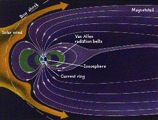
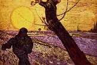
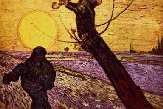

Signs for technical/specialized vocabulary
David Bar-Tzur
Links updated monthly with the help of LinkAlarm.

 

Van Allen belt perturbed by solar wind1; Le Semeur by Vincent Van Gogh.2
EXPLANATION OF THE GLOSSING SYSTEM
(to understand how I describe the signs in this dictionary).
For content knowledge of how to use the physics terms in context, see Guided tutorial in physics for interpreters.
For negotiating and developing temporary signs, see Preparation and sign negotiation
For vocabulary lists to determine helpful signs for a specific discipline, see Vocabulary lists by topic.
- vaccinate
- (1) [L] moves towards location of shot and touches it with FT of index finger while thumb closes like firing a gun. For a QuickTime movie of this sign, see ASL browser - vaccinate. (2) [3:] closes while injecting arm.
- vacuole
- V-A-C-U-O-L-E.
- vacuum
- ~ (devoid of material)
- V-A-C-U-U-M.
- ~ (cleaner)
- [5^], PO down, FO away, closes and moves out from under NDH [Bb], PO down, FO > DS, twice while mouthing huphup.
- ~ (use ~ cleaner)
- [5^], PO down, FO away, closes and moves out from under NDH [Bb], PO down, FO > DS, twice while mouthing huphup + [S] moves as if vacuuming the floor.
- vacuum cleaner
- [5^], PO down, FO away, closes and moves out from under NDH [Bb], PO down, FO > DS, twice while mouthing huphup.
- vacuum fluoreccent
- V-F.
- vacuum tube voltmeter
- V-T-V-M.
- vagina
- ~
- (2h)[L], PO down (roughly) tap index to index and thumb to thumb twice. For a QuickTime movie of this sign, see ASL browser - vagina.
- burning sensation in one's ~
- NDH [L], PO > signer, FO down, represents vagina and DH moves in vertical circle, alt. opening to a wiggling [5] and closing to [S], while remaining in contact with index finger of NDH.
- discharge from ~
- NDH [L], PO > signer, FO down, represents vagina and DH [4], PO > signer, FO > NDS, moves down to show point of origin of discharge and direction.
- itching sensation in one's ~
- Use FTs of [5:] to insistently scratch at FT of [L], PO > signer, FO down, with zz and head tilted back.
- sore/ulceration on one's ~
- NDH [1], PO > DS, FO away, represents penis, and DH is held against DS of NDH, opening from [S] to [5:] to represent the growth.
- vaginal culture
- [X] scrapes FT against inside rim of [L], FO down, PO towards + ANALYZE.
- vaginal mucous membranes
- VAGINA + with NDH held in place from the previous sign, DH G-CL has thumb travel along the inside edge of it + WET.
- valence
- V-A-L-E-N-C-E.
- valid
- (1) APPROPRIATE. (2) V-A-L-I-D.
- validation
- (1) MAKE APPROPRIATE. (2) MAKE V-A-L-I-D.
- validity
- (1) APPROPRIATE. (2) V-A-L-I-D-I-T-Y.
- valium
- (1) V-A-L-I-U-M. (2) "V".
- valley
- (2h)[Bb], POs down, FOs away, touch sides, separate and rise to show sloping sides.
- Valli, Clayton
- Thumbside of [V] touches DS of chin twice.
- value
- ~ (color, math)
- (1) (2h)[flat F], POs><, FOs away, tap thumbs together twice. For a QuickTime movie of this sign, see ASL browser - value. (2) (2h)[V], POs down, FOs away, tap against one another, separate while rising and tap again.
- ~/~s (Sociology)
- CHERISH+, that is, (2h)[5:], POs > signer, are held at respective sides of chin and close while moving down slightly: this is repeated without a pause between.
- ~ (v)
- CHERISH, that is, (2h)[5:], POs > signer, are held at respective sides of chin and close while moving down slightly.
- plug in (the ~, math)
- VALUE, REPLACE++.
- value added
- VALUE ADD(ED)-TO.
- valve
- [B], FO away, flops on S. For a QuickTime movie of this sign, see ASL browser - valve.
- vanadium
- "V". For more information on this and other elements, see The elements. And for fun, see Elements by Tom Lehrer. To see this song with captions, go to The Elements song by Tom Lehrer.
- van Gogh, Vincent
- Since he was Dutch, this Dutch sign might be useful: [C dot], PO > back, moves down side of face as if cutting off the ear. From http://www.effathaguyot.nl/index.php?stab=1&signfirst=V (Effatha - Gebarenboek), which is no longer extant.
- vanilla
- (1) "V". For a QuickTime movie of this sign, see ASL browser - vanilla. (2) [V] rubs wrist against [S], PO down.
- vanishing point
- V-P.
- vanity
- ~ (of spirit)
- (2h)[V], look signer up and down as if s/he were really "something".
- (everything is) ~
- WORTHLESS.
- var
- V-A-R.
- variable
- ~ (adj)
- (1) VARY CAN. (2) V-A-R.
- ~ (n)
- (1) V-VARY'small movement'. (2) VARY CAN. (3) VARY. For a QuickTime movie of this sign, see ASL browser - variable.
- variable capacitance diode
- V-C-D.
- variable crystal oscillator
- V-X-O. Note: the "X" is "chi" the first letter in the Greek word for crystal.
- variable frequency oscillator
- V-F-O.
- variable star
- STAR CHANGE++.
- variance
- ~ (general)
- V-A-R.
- ~ (of population)
- Draw the shape of a lowercase sigma (
 ) in the air with the index finger + SECOND 'superscripted'.
) in the air with the index finger + SECOND 'superscripted'.
- ~ (of sample)
- "S" + SECOND 'superscripted'.
- vary
- (2h)[1], POs down, FOs away, hands start with FT touching and then alt. ascend and descend while separating.
- vas deferens
- TESTICLES + (2h)[open F], POs up, FOs away, pronate while moving away.
- vasectomy
- (1) (2h)V-CL cut tubes at sides of pubic area. (2) (2h)[X dot] ties tubes at pubic area. For a QuickTime movie of the of this sign, see ASL browser - sterilization. (3) (2h)V-CL cut tubes at pubic area, then (2h)[X dot] ties tubes at sides of pubic area.
- Vashti (Jewish)
- V-A-S-H-T-I
- vault
- ~ (ceiling)
- (2h)[B^] touch FTs and move over head.
- ~ (jump)
- [S] shoots out into a [V] as it jumps over [1], PO down, FO > DS.
- ~ (safe)
- ROOM is signed with slow deliberate movement to show the large scale + (2h)[S] grasp the spokes of a turnwheel and turn it with effort.
- Vayikra (Bible)
- L-E-V.
- veal
- V-E-A-L.
- vector
- ~ (disease)
- CARRY DISEASE.
- ~ (math)
- "V" shaken below NDH [1], PO down, FO > DS.
- An alternate method is to add the negative of a ~, which is a ~ with the same length but pointing in the opposite direction
- Use the left hand for vector A and point the index finger in the appropriate direction. Now place the end of the right hand index finger (representing B) against the FT of the left hand. This represents A + B. To show the addition of the negative of B, rotate B around 180o while still in contact with the FT of the left hand and now you have A - B. This is the vector D which begins at the tail of A and ends at the head of B.
- the A ~
- "A" shaken below NDH [1], PO down, FO > DS. Note: Any letter may be substituted for "A".
- adding ~s
- VECTOR ADD-HORIZONTALLY.
- adding ~ tail to tip
- use index fingers
to represent vectors, with the bottom knuckle as the tail.
- addition of components
- PART"each"
ADD-VERTICALLY"each".
- the result of the ~ addition is the diagonal of a parallelogram with sides A and B
- Draw a parallelogram with both hands that starts at the far apex, both hands come to the close apex, and then with the NDH held in place, the DH moves from the close apex to the final, showing the diagonal.
- The tail of one ~, in this case (A), is moved to the head of the other ~ (B). The vector sum (C) is the vector that extends from the tail of one vector to the head of the other.
- Use the index fingers of each hand to represent the vectors, with the tip of the finger being the head of the arrow and the knuckle being the tail. A, 1-CL'show the angle of vector A and hold it there.' B (italics means use the NDH), 1-CL'place the index finger against the knuckle of the DH hand to show tip to tail'. Keep the NDH as a placeholder and draw a line with the DH index finger from the knuckle of the NDH to where the DH FT was. Now sign THAT* TOTAL. Note: TOTAL is (2h)[5], NDHPO up, DHPO down, FOs away. Hands interchange POs, close to (2h)[O^], and end by touching FTs.
- the ~ A
- "A" shaken below NDH [1], PO down, FO > DS. Note: Any letter may be substituted for "A".
- Vedas
- HINDU/INDIA HOLY WRITE+, where the second sign is H-NICE.
- vehicle
- CAR.
- vein
- [1] travels up arm to show path of blood.
- velocity
- ~
- (1) V-E-L. Don't sign FAST because velocity is a vector and speed is a scalar.
- ~ versus time
- (1, at least initially to show the concept visually) Show the rectangular coordinate system by using an L-CL as the x,y-axis and sign 1-CL'moves along thumb which represents x-axis', TIME. 1-CL'moves along forefinger which represents y-axis', V-E-L. (2) (<) V-E-L, COMPARE (>) TIME.
- change in ~ (
 V)
V) - TRIANGLE "V", where TRIANGLE represents the letter "delta" ().
- velocity dispersion method
- "V" + [1] draws a Gaussian curve in the air + METHOD.
- velocity of recession
- V R"subscripted".
- venereal disease
- V-D.
- venereal wart
- [5:] places FT on pubic area.
- Venezuela
- [V^], PO > signer, twists out at eye level 2x. To see the reference source for the sign(s) for this country or to look up other countries in the same geographical area, see Indigenous signs for countries. To find signs for cities within this country (some have no entries) see Indigenous signs for cities.
- venison
- DEER MEAT, where the first sign taps the thumbs of (2h)[5], POs away, against respective temples. For a QuickTime movie of this sign, see ASL browser - venison.
- vent
- ~ (n)
- (2h)[1] draws outline of vent + (2h)[B^], start with POs > signer, FOs ><, and FTs shoot out repeatedly to [B] to fan away whatever is to be vented.
- ~ (v)
- (2h)[B^], start with POs > signer, FOs ><, and FTs shoot out repeatedly to [B] to fan away whatever is to be vented.
- ventilation
- (1) V-E-N-T. (2) Blow air from mouth while (2h)[B], PO > signer, FO down, brush away from signer.
- ventricle
- [O^] opens open to [5^] when it pumps. As a mnemonic (memory aid) imagine an "A" (atrium or auricle) opening down because it is wide at the bottom and a "V" (ventricle) opening up because it is wide at the top.
- verb
- ~
- [V], PO down, FO > NDS, brushes against the chin twice while moving > DS. For a QuickTime movie of this sign, see ASL browser - verb.
- inseparable ~
- (1) SEPARATE CAN'T. (2) NOT SEPARATE POSSIBLE.
- intransitive ~
- "I" "V".
- separable ~
- (1) VERB, SEPERATE CAN. (2) SEPERATE POSSIBLE VERB.
- transitive ~
- "T" "V".
- verbal
- WORD"each".
- verbatim
- WORD"each".
- verdict
- COURT DECIDE.
- verification
- PROVE++, that is, (2h)[B], POs up, FOs away, DH taps on palm of NDH several times.
- verifier
- PROVE MACHINE, where the first sign is, (2h)[B], POs up, FOs away, DH slaps palm of NDH from above once.
- verify
- PROVE, that is, (2h)[B], POs up, FOs away, DH slaps palm of NDH from above once.
- vernier calipers
- V-E-R-N-I-E-R + [bC], PO > NDS, FO up, taps thumb and index finger together 2x.
- Versa module Eurocard
- -V-M-E.
- verse
- [G], FO up, runs FTs along palm of NDH, [B], PO > DS, FO away. For an animated gif of this sign, see Animated dictionary of religious signs - Deaf Missions: Verse.
- versus (criminal justice)
- CHALLENGE. For a QuickTime movie of this sign, see ASL browser - versus.
- vertebra(e)
- INDEX-spine + (2h)V:-CL, DH is held above NDH, then DH only moves up.
- vertebral canal
- (2h)[V:], POs <, FOs away, NDH touches under chin and DH touches NDH from below and then descends while punching forward slightly to show the separate vertebrae in the neck + INSIDE.
- vertebral disk
- (2h)[V:], POs <, FOs away, DH touches NDH from below and then descends + holding NDH in place from the previous sign, shove [bC] under NDH as if supplying it with a disk.
- vertex
- ~ (general)
- (1) V-E-R-T-E-X. (2) TOP.
- ~ (parabola, general and opens up)
- NDH [bC], PO up, FO > NDS, DH [1] touches where the vertex of the parabola would be.
- ~ (parabola, opens down)
- NDH [bC], PO down, FO > DS, DH [1] touches where the vertex of the parabola would be.
- ~ (parabola, opens left)
- Right hand [bC], PO > NDS, FO up, left hand [1] touches where the vertex of the parabola would be.
- ~ (parabola, opens right)
- Left hand [bC], PO > DS, FO up, right hand [1] touches where the vertex of the parabola would be.
- vertical
- (1) [B], PO > NDS, FO away, moves straight up and down several times to represent something that is, vertical. For a QuickTime movie of this sign, see ASL browser - vertical. (2) Use a classifier to show the orientation of the object depending on which shape it has.
- vertical component
- PART + [1] traces down the index finger of the NDH L-CL (representing the rectangular coordinate system).
- vertical ellipse
- [1] draws a vertical ellipse.
- vertical hyperbola
- (2h)[1], draw in space.
- vertical split screen
- [B], PO > NDS, FO away, moves downwards + (2h)[1], POs down, FOs away, trace the outline of a computer screen, starting from the middle of the uppermost side.
- vertical sync
- V-S.
- vertical wipe
- (2h)[B], NDPO > DS, FO up. DH, PO down, sweeps FT down NDH.
- vertices
- ~ (horizontal ellipse)
- (2h)[bC], POs ><, FOs up, are placed side by side like the outline of a horizontal ellipse, then the two index fingers point where the vertices would be.
- ~ (hyperbola, horizontal or general)
- DH [bC], PO > NDS, FO up, NDH [1] touches the skin between the thumb and index finger + NDH [bC], PO > DS, FO up, DH [1] touches the skin between the thumb and index finger.
- ~ (hyperbola, vertical)
- NDH [bC], PO away, FO up, NDH [1] touches the skin between the thumb and index finger + NDH [bC], PO down, FO > DS, DH [1] touches the skin between the thumb and index finger.
- ~ (vertical ellipse)
- (2h)[bC], POs ><, are placed one above the other like the outline of a vertical ellipse, then the two index fingers point where the vertices would be.
- very high digital subscriber line
- V-D-S-L.
- very high frequency
- V-H-F.
- very high speed integrated circuit
- V-H-S-I-C.
- very large scale integration
- V-L-S-I.
- very long instruction word
- V-L-I-W.
- very low frequency
- V-L-F.
- VESA local bus
- V-L-B.
- Vespers (High Church)
- NIGHT PRAYER.
- vest
- V-E-S-T.
- vestments (High Church)
- PRIEST CLOTHES.
- vestry
- (1) HOLY PLACE. (2) PRIEST 'S ROOM TO-DRESS.
- veteran (soldier)
- (1) V-E-T. (2) [V^] taps FT against ND upper arm. (3) SOLDIER FINISH, RETIRE NOW. (4) ARMY V-E-T.
- veterinarian
- V-E-T. For a QuickTime movie of this sign, see ASL browser - veterinarian.
- veto
- [A dot], PO > NDS, FO away, turns thumb down.
- Via Crucis
- WAY CROSS.
- Via Dolorosa
- WAY CROSS.
- vibrate, vibration
- ~ (horizontal)
- (1) (2h)[5], PO down, FO away, move antisymmetrically (some people do it symmetrically) from side to side.
- ~ (vertical)
- (2h)[5], POs down, play drums. For a QuickTime movie of this sign, see ASL browser - vibrate.
- vibrating body
- SOMETHING + (2h)[5], PO down, FO away, move
antisymmetrically from side to side compress the air (compression, [wave] condensation]), then (2h)[5], POs ><, FOs away, rush together while cheeks puff.
- vibrator
- (1) FT of [1] is inserted in the hole of [O], PO down, FO away, vibrates while moving within it and pc. (1) MACHINE + FT of [1] is inserted in the hole of [O], PO down, FO away, vibrates while moving within it and pc.
- Vibunzi
- (2h)[5:^) twist corn. For a QuickTime movie of this sign, see ASL browser - corn.
- vicar (Lutheran, Missouri Synod)
- [V], PO >NDS, FO away, taps the pinky side of [S], PO >DS, FO away. Similar to ASSISTANT,
- vice-president
- [V] touches index finger to temple and then moves down while changing to [P]. For a QuickTime movie of this sign, see ASL browser - vice-president.
- vicinity
- DH [5], PO down, rubs on thumb side of NDH [S] below it.
- victim
- (1) V-BODY. For a QuickTime movie of this sign, see ASL browser - victim. (2) [V] stabs neck (+ AGENT). (3) (2h)[H] cross at fingers and cover mouth, PO > signer, then uncross while moving away from signer + AGENT.
- video
- ~ (n)
- DH [V], PO > NDS circles NDH [B], PO > DS, and changes to a [T] and touches palm to palm. For a QuickTime movie of this sign, see ASL browser - videotape.
- ~ (v)
- The index finger of the NDH is held at the wrist of the DH [5], PO away and the DH waves slightly up and down while maintaining contact with the NDH.
- video camera
- (1) The index finger of the NDH is held at the wrist of the DH [3], PO > NDS and the DH waves slightly from side to side while maintaining contact with the NDH. (2) [B] is held up like the side of a camera and [S] cranks the camera. For a QuickTime movie of this sign, see ASL browser - video camera.
- video cassette recorder
- V-C-R.
- Video Enhanced Standards Association
- V-E-S-A.
- video game
- (2h)[A dot], POs > signer, FOs ><, are held side by side and wiggle thumbs.
- video graphics array
- V-G-A.
- video look up table
- V-L-T.
- video random access memory
- V-R-A-M.
- video tape
- DH [V], PO > NDS circles NDH [B], PO > DS, and changes to a [T] and touches palm to palm. For a QuickTime movie of this sign, see ASL browser - videotape.
- video tape recorder
- V-T-R.
- vidui
- (2h)[5], FOs down, put FTs on stomach, draw FTs up chest, rotate wrists so that POs up.
- Vietnam
- (1) [H] touches nose and then ND shoulder. (2) [bO] is held below nose, PO towards signer, opens to [G] while descending and closes to [bO] again. (< Vandyke style beard and moustache.) To see the reference source for the sign(s) for this country or to look up other countries in the same geographical area, see Indigenous signs for countries. To find signs for cities within this country (some have no entries) see Indigenous signs for cities.
- view (computer command)
- LOOK.
- view camera
- SEE + (2h)[bC], POs ><, FOs up, DH index finger flicks down and then back up as if snapping a picture.
- viewpoint
- (2h)[V], FOs up, DH touches middle finger to eye, then both hands pronate. For a QuickTime movie of this sign, see ASL browser - viewpoint.
- vile
- DISGUSTING*.
- vine
- Start like GROW and hands pronate (twist to POs away) and become (2h)[5:]. For a movei fo this sign, go to
Dictionary of Sign (ASL) - vine.
- vinegar
- V-WATER. For a QuickTime movie of this sign, see ASL browser - vinegar. (2) V-SOUR.
- violence
- AWFUL HAPPEN.
- virgin
- (1) Drag index finger of [V] down cheek. For a QuickTime movie of this sign, see ASL browser - virgin. (2) NOT-YET + (2h)[V], POs ><, FOs away, DH bounces on top of NDH.
- Virgin Birth
- (1) VIRGIN + (2h)[O^>5^], POs ><, with DH held higher and at DS and NDH held lower and at NDS. (2) VIRGIN GET-FROM- Heaven, where the latter sign begins very high and is brought to signer.
- Virgin Mary
- (1) [M] touches DS temple and DS shoulder. (2) [M] touches NDS temple, is drawn across forehead, and touches DS shoulder. (3) [V] touches NDS shoulder, is drawn up to and across forehead while changing to [M], and touches DS shoulder. (4) [V] touches NDS temple, is drawn across forehead, and touches DS shoulder. [< all are a parallel to the veil that nuns wore, and (3) & (4) add initialization from the Virgin Mary.]
- virtual
- (1) SEEM TRUE~BUSINESS, where the second sign (compound) is TRUE + WORK is moves from side to side of wrist like the movement of BUSINESS. (2) V-INVENT.
- virtual memory
- V-M.
- virtual reality
- V-R.
- virtual terminal
- V-T.
- virus
- [V], PO away, FO up, is shaken inside of [C], PO > DS, FO away.
- visceral (anatomy)
- OUTSIDE SURFACE.
- viscosity
- THICK, that is (2h)[5:] are held close to neck on their respective sides with PO > neck and move in a slight jerk towards the neck.
- viscous
- THICK, that is (2h)[5:] are held close to neck on their respective sides with PO > neck and move in a slight jerk towards the neck.
- Vishnu
- SUPREME SUPPORTER. First sign is (2h)[A], FOs away, DH starts below NDH and arcs around it until it is on top.
- visibility (meteorology)
- (2h)alt.SEE"each". For a QuickTime movie of this sign, see ASL browser - visibility.
- visible (light, spectrum)
- SEE CAN.
- Visible English
- SEE ABLE ENGLISH.
- vision
- ~ (the ability to see)
- (1) SEE. For a QuickTime movie of this sign, see ASL browser - vision. (2) (2h)alt.SEE.
- ~ (religious)
- HIT* VISUALIZE.
- vision loss
- (1) VISION DETERIORATE. The second sign being (2h)[A dot], PO towards signer, FO > <, hands descend while wiggling at the wrists. (2) VISION + (2h)[C] held by the eyes slowly move towards each other wiggling FTs as they close to (2h)[S].
- vision quest
- WILLING SUFFER FOR-FOR? VISUALIZE SPIRIT.
- visual
- (1) SEE. For a QuickTime movie of this sign, see ASL browser - vision. (2) (2h)alt.SEE.
- visual area (brain)
- SEE 5:-CL is held against rear lower lobe of brain.
- visual binary system
- SEE CAN DOUBLE STAR SYSTEM.
- visualization, visualize
- (2h)[S] are held at forehead with DH closer to head, and hands open to (2h)[5] while separating while FT wg.
- visual perception
- SEE UNDERSTAND.
- vitamin
- "V". For a QuickTime movie of this sign, see ASL browser - vitamin.
- vocabulary
- FT of [V] tap [1], PO > DS, FO away. Some people do this with NDH still and some do it with both hands descending.
- word
- [bC], taps FT against [1], PO > DS, FO away.
- vocational
- V-O-C.
- vocational rehabilitation
- V-O-C R-E-H-A-B.
- vodka
- [S] flicks index finger against side of neck.
- voice operated transmit
- V-O-X. Note: "trans" = X as in "Xmitter" and "Xformer".
- void
- ~ (empty)
- (2h)[open 8], FOs away, POs down, circle symmetrically and horizontally, move forward and close to (2h)[A], POs away, with "hup".
- ~ (invalid)
- (2h)[open 8], FOs away, POs down, circle symmetrically and horizontally, move forward and close to (2h)[A], POs away, with "hup".
- ~ (v)
- CANCEL.
- voir dire (pronounced "v'wahr dear")
- INTERVIEW + index finger of [V] taps to one side of DS eye + QUALIFIED.
- volatile
- EXPLODE EASY CAN.
- volcano
- (2h)[5:], POs down, move down diagonally to show the shape of it, then [O^] moves up through NDH [C], PO > DS, and opens to a [5], similar to GROW. For a QuickTime movie of this sign, see ASL browser - volcano.
- volcanism
- VOLCANO ACTIVITY, that is, (2h)[5:], POs down, move down diagonally to show the shape of it, then [O^] moves up through NDH [C], PO > DS, and opens to a [5], similar to GROW + (2h)[5:], POs down, FOs away, move in symmetric vertical circles parallel to the chest.
- Volkswagen
- V-W.
- volleyball
- (1) (2h)[3], POs away, FOs up, are held high and move up and apart. (2) (2h)[8], POs away, FOs up, flick middle fingers against thumbs repeatedly like EIGHTY-FIVE. (3) (2h)[8], POs away, FOs up, flick middle fingers against thumbs repeatedly like SEVENTY-FIVE. (4) Both hands are held high and spell V-B.
- volt
- "V".
- voltage<
- "V".
- voltage controlled oscillator
- V-C-O.
- voltage gain (Av)
- A V"subscripted".
- voltage regulator
- V-R.
- voltage standing wave ratio
- V-S-W-R.
- voltage to frequency converter
- V-F-C.
- voltage tunable magnetron
- V-T-M.
- volt ampere
- V-A.
- voltmeter
- "V" METER.
- volt-ohmmeter
- V-O-M.
- volts alternating current
- V-A-C.
- volts direct current
- V-D-C.
- volume
- ~ (auditory)
- V-O-L.
- ~ (3D)
- (1) INSIDE HOW-MUCH? (2) V-GROUP.
- volume table of contents (Computers)
- V-T-O-C.
- volumetric density
- Draw lowercase rho (
 ) with index finger or FT of [bO], if this is the symbol being used.
) with index finger or FT of [bO], if this is the symbol being used.
- volumetric expansion
- (2h)[C], FOs away, are held with DH inside NDH and separate while opening into (2h)[5:] while cheeks are puffed out with pc.
- volumetric flask
- MEASURE + (2h)[C], PO up, FO away, pronates to show spherical bottom, then changes to (2h)[F], POs ><, FOs away, with DH moving upwards to show thin neck.
- voluntary
- (1) INTEND. (2) NOT AUTOMATIC.
- volunteer (v)
- FT of [F] pull at shirt/blouse several times.
- vomit
- ~ (general)
- (1) (2h)[4] or [5], POs ><, FOs up, DH is touches chin, and both hands move forward in upward arc and shoulders heave with open mouth. (2) (1) with (1h).
- projectile ~ing
- (2h)[4] or [5], POs ><, FOs up, DH touches chin, and both hands move slightly back, pause, and then move forward with force.
- voter registration application
- APPLY VOTE FORM.
- voucher
- V-O-U-C-H-E-R.
- vow
- NDH [B] is held low as in TABLE and DH [1], PO > NDS, FO up, touches lips and moves away, changing to a [B], PO away, FO up, and DH elbow strikes NDH.
- voyeur, voyeurism
- (2h)[S], POs away, FOs up, are held side by side in front of the eyes as if hanging onto a wall, then hands are brought down and head lifted up with a facial expression of sexual delight.
- vulva
- ~
- VAGINA(1x) + with NDH held in place from previous sign, DH [5] rubs its palm over the NDH to show the general area of the vagina, which conceptually includes the labia, clitoris and vaginal opening.
- inner lips (of the ~)
- [G], PO > signer, traces inner rim of [L], PO > signer, FO down.
- outer lips (of the ~)
- [G], PO > signer, traces outer rim of [L], PO > signer, FO down.
Image credits
1. The solar wind.
2. From http://lowellg.simplenet.com/politics.htm (Politics and government). This web site is no longer extant.

Home